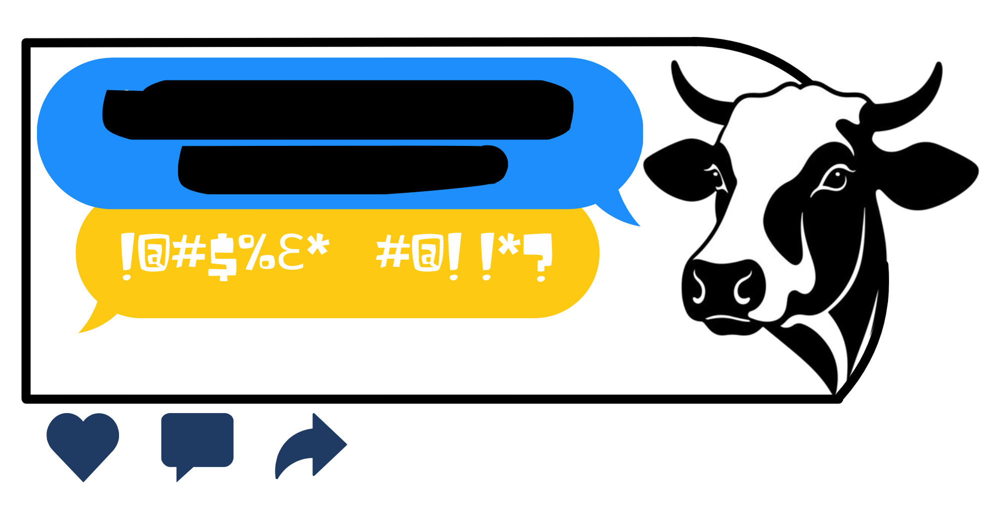

The Flyers
Tap the flyer or use the arrows (or your ← → keys) to browse.

“Cow's Got Your Tongue?” began as a question students asked their own campus: what are we willing to say out loud, and what do we hold back? To draw classmates to the survey, undergraduates in Dr. Jens Pohlmann's STS 110 course designed the flyers gathered here — the posters, logos, and promotional art they created to spark curiosity on a crowded quad.
Each piece reflects a choice about how to make a conversation about free speech feel inviting rather than abstract.
Tap the flyer or use the arrows (or your ← → keys) to browse.